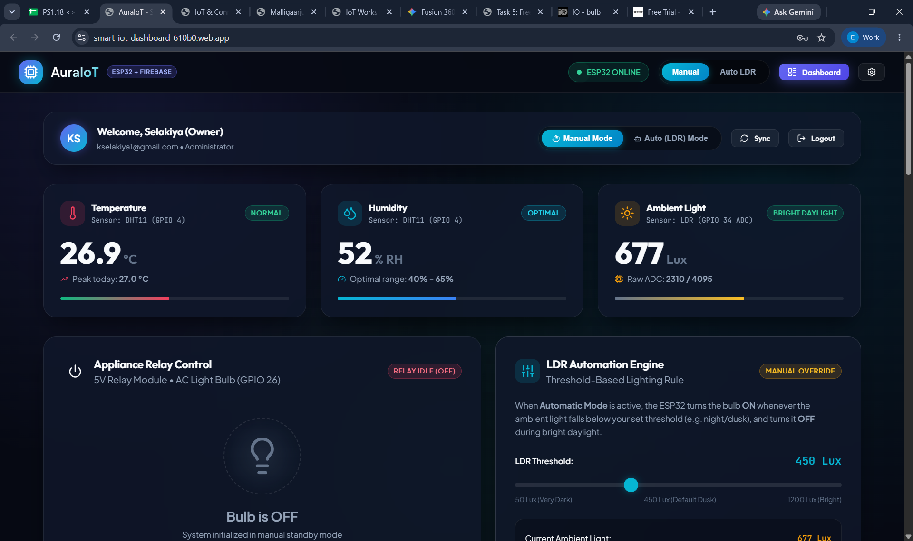
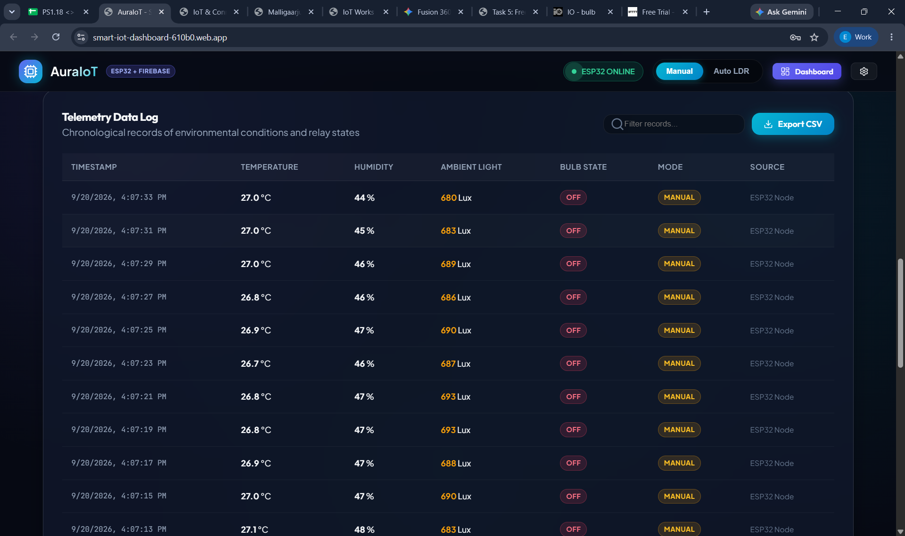
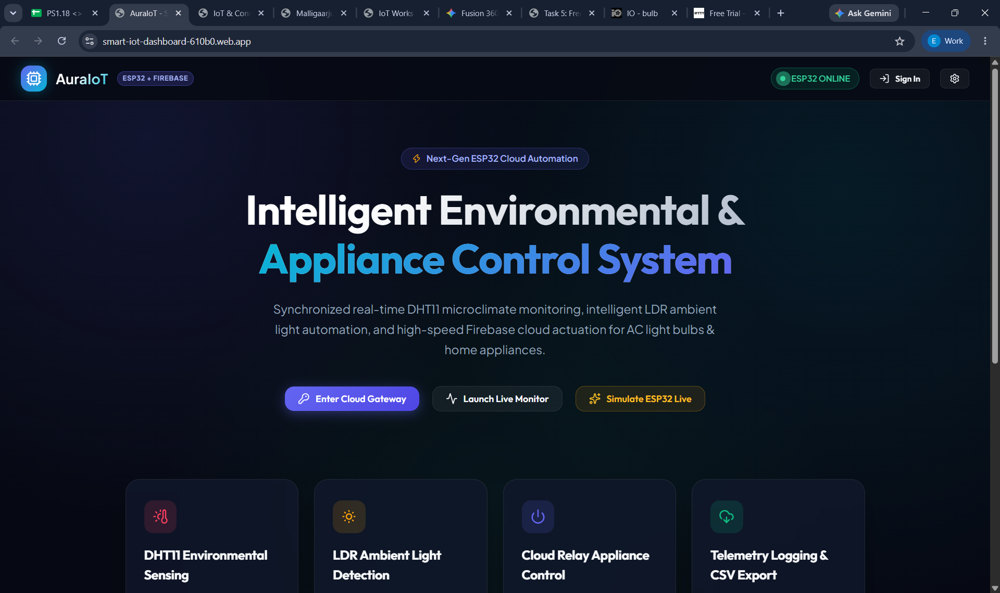
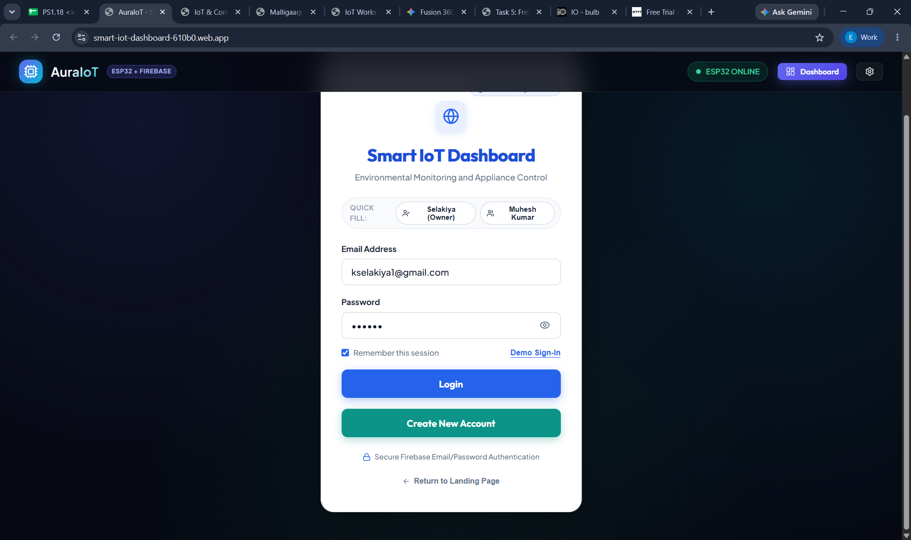

Creating Firebase Realtime Web Dashboard
Designing and engineering "AuraIoT" — a responsive Google Firebase Realtime Database cloud dashboard (hosted at smart-iot-dashboard-610b0.web.app) featuring live DHT11 microclimate monitoring, intelligent LDR ambient light automation, appliance relay controls, user authentication, and CSV telemetry export.
smart-iot-dashboard-610b0.web.app
Firebase Web Dashboard Implementation (AuraIoT)
Authentic screenshots illustrating each core view of the deployed AuraIoT Firebase Realtime Web Dashboard created by Elakiya K S for smart environmental sensing and appliance automation.




kselakiyal@gmail.com) and demo accounts
Key Technical Points
Cloud DB, WebSocket SSE & UI Architecture-
Google Firebase Realtime Database NoSQL Model: Structured the cloud database as a lightweight JSON data tree with nodes for
/telemetry(temperature, humidity, lux),/controls/bulbState, and/config/ldrThreshold. -
Sub-100ms Bidirectional State Synchronization: Employed the Firebase JavaScript SDK v10 with persistent WebSocket listeners (
onValue()) to dynamically render state changes without browser refresh. - Intelligent LDR Automation Engine: Built dual operating modes: "Manual Mode" (user directly toggles bulb) and "Auto (LDR) Mode", where an interactive slider sets a custom threshold (50 Lux Dark, 450 Lux Dusk, 1200 Lux Bright) to automate the bulb based on daylight.
- Chronological Telemetry Logging & CSV Export: Created client-side data buffering that logs timestamped environmental conditions and generates downloadable RFC-4180 CSV files directly in the browser for analytics.
-
Production Deployment on Firebase Hosting: Deployed the complete responsive web application to Google Firebase CDN edge servers at
smart-iot-dashboard-610b0.web.appwith HTTPS and SSL encryption.
What I Learned & Insights
Web Architecture & IoT Cloud Design- Full-Stack Cloud Integration: Learned how a modern cloud database serves as the high-speed bridge between physical IoT edge hardware (ESP32) and multi-user web dashboards worldwide.
- Role-Based Authentication Security: Implemented Firebase Authentication to protect control panels with email/password credentials, ensuring only authenticated administrators can trigger electrical relays.
- Optimistic UI & Latency Masking: Mastered the user experience technique of updating dashboard toggles immediately upon click while confirming state persistence asynchronously via database acknowledgements.
- Hysteresis in Automation Algorithms: Understood why sensor noise and transient ambient light fluctuations require software deadbands in automation engines to prevent rapid relay bouncing.
Firebase Web App Implementation Code
Front-end JavaScript implementation showcasing Firebase Realtime Database initialization, live telemetry stream listeners, relay toggle dispatch, and client-side CSV export logic.
// =========================================================
// AuraIoT: Google Firebase Realtime Database Client Setup
// Hosted at: smart-iot-dashboard-610b0.web.app
// =========================================================
import { initializeApp } from "https://www.gstatic.com/firebasejs/10.7.1/firebase-app.js";
import { getDatabase, ref, onValue, set, get } from "https://www.gstatic.com/firebasejs/10.7.1/firebase-database.js";
const firebaseConfig = {
apiKey: "AIzaSyDemoAuraIoTKey_Elakiya",
authDomain: "smart-iot-dashboard-610b0.firebaseapp.com",
databaseURL: "https://smart-iot-dashboard-610b0-default-rtdb.firebaseio.com",
projectId: "smart-iot-dashboard-610b0",
storageBucket: "smart-iot-dashboard-610b0.appspot.com"
};
// Initialize Firebase Services
const app = initializeApp(firebaseConfig);
const db = getDatabase(app);
// Database References
const telemetryRef = ref(db, 'telemetry/live');
const bulbStateRef = ref(db, 'controls/bulbState');
const autoModeRef = ref(db, 'controls/autoLdrMode');
const ldrThreshRef = ref(db, 'config/ldrThreshold');
// =========================================================
// 1. Live Telemetry Listener (Temperature, Humidity, Lux)
// =========================================================
onValue(telemetryRef, (snapshot) => {
const data = snapshot.val();
if (!data) return;
// Update DOM Gauges
document.getElementById('tempVal').innerText = data.temperature.toFixed(1) + " °C";
document.getElementById('humVal').innerText = data.humidity + " %";
document.getElementById('luxVal').innerText = data.lux + " Lux";
// Append to Telemetry Historical Table
appendDataLogRow(data);
});
// =========================================================
// 2. Bi-Directional Bulb Relay Toggle Handler
// =========================================================
function toggleBulbRelay(newState) {
set(bulbStateRef, newState ? 1 : 0)
.then(() => console.log("Relay state updated to: " + (newState ? "ON" : "OFF")))
.catch((err) => console.error("Firebase write error:", err));
}
// =========================================================
// 3. CSV Dataset Export Engine
// =========================================================
function exportTelemetryCSV() {
let csv = "Timestamp,Temperature (°C),Humidity (%),Ambient Light (Lux),Bulb State,Mode\n";
telemetryHistory.forEach(r => {
csv += `${r.time},${r.temp},${r.hum},${r.lux},${r.bulb},${r.mode}\n`;
});
const blob = new Blob([csv], { type: 'text/csv;charset=utf-8;' });
const link = document.createElement('a');
link.href = URL.createObjectURL(blob);
link.setAttribute('download', 'AuraIoT_Telemetry_Log.csv');
link.click();
}